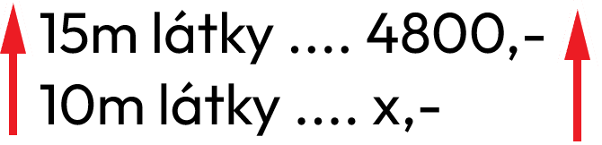
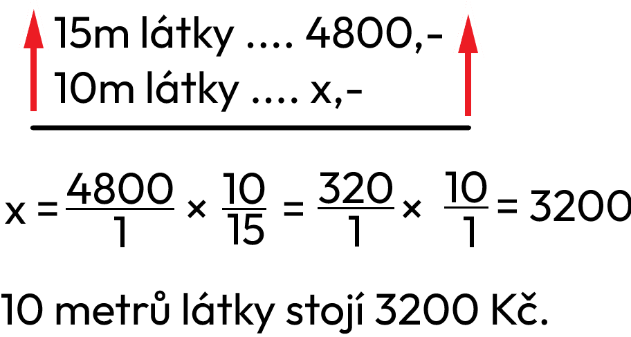
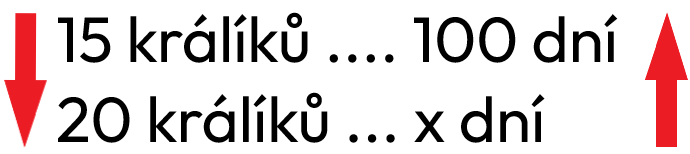
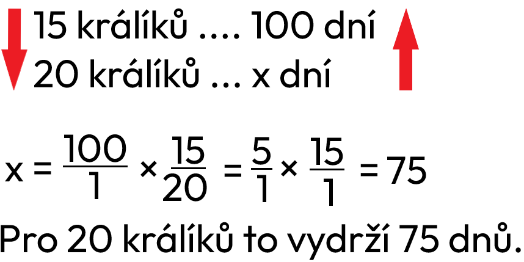

Trojčlenka
Trojčlenka je matematická metoda, která slouží k řešení úloh týkajících se přímé nebo nepřímé úměrnosti. Využívá se k výpočtu neznámé hodnoty, když jsou známé tři hodnoty v úměrnosti. Obvykle se zadávají čtyři hodnoty, z nichž tři jsou známé, a jedna je neznámá, a používá se k určení té neznámé. Například, pokud víme, že 3 kg jablek stojí 60 Kč, kolik bude stát 5 kg jablek, můžeme použít trojčlenku k výpočtu ceny za 5 kg.
Informace
- trojčlenka je jednoduchý nástroj pro dopočítání 1 proměnné se 3 známými
Postup vypočítání (přímá úměrnost)
Zápis
Patnáct metrů látky stojí 4800 Kč, kolik stojí 10 m?
15 m látky .... 4800,-
10 m látky ... x,-
Přímá, nepřímá úměrnost
*pokud se jedná o procenta, je to vždy přímá
Šipka se vždy dělá od x nahoru nebo dolů. Pokud je úměrnost přímá, i na druhé straně bude šipka stejným směrem. Pokud je ale úměrnost nepřímá, šipka bude na druhou stranu.
Zápis příkladu, výpočet a odpověď
Musíme jít po šipkách, takže napíšeme x =, pak 4800, dáme × a napíšeme podle šipek zlomek 10/15.
Postup počítání (nepřímá úměrnost)
Zápis
Kolik vydrží jídla pro 20 králíků, jestliže pro 15 králíků 100 dní?
15 králíků .... 100 dní
20 králíků ... x dní
Přímá, nepřímá úměrnost
*pokud se jedná o procenta, je to vždy přímá
Šipka se vždy dělá od x nahoru nebo dolů. Pokud je úměrnost přímá, i na druhé straně bude šipka stejným směrem. Pokud je ale úměrnost nepřímá, šipka bude na druhou stranu.
Zápis příkladu, výpočet a odpověď
Musíme jít po šipkách, takže napíšeme x =, pak 100, dáme × a napíšeme podle šipek zlomek 15/20.
